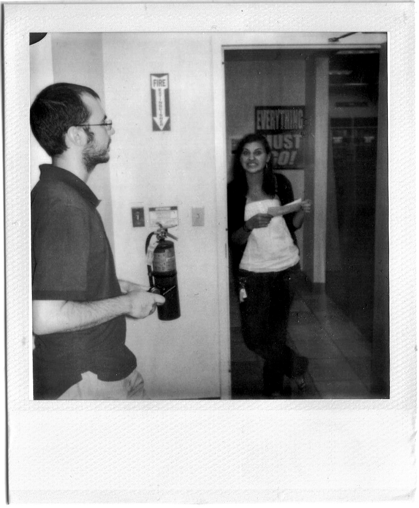

Rebecca Van Der Jagt began working at Borders in June of 2011 and personally experienced the liquidation of the Borders location in Ramsey, New Jersey. She is currently pursuing a Masters degree in Sociology and Education at Columbia Teachers College and aspires to be both a writer and an educator.